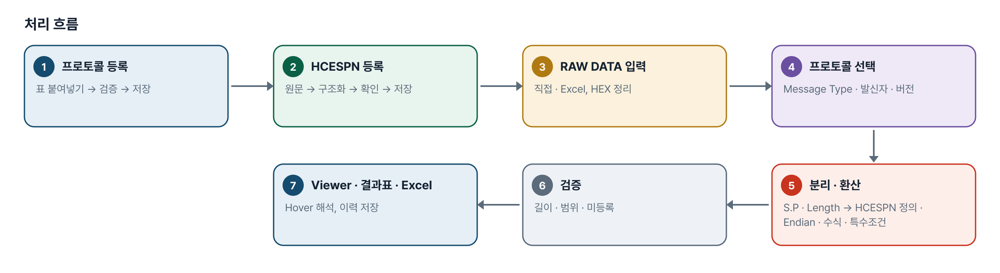
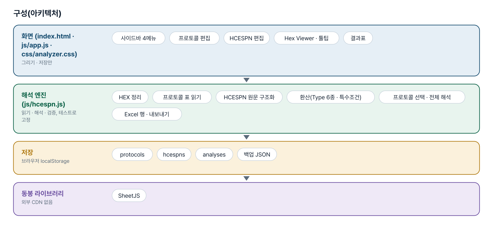
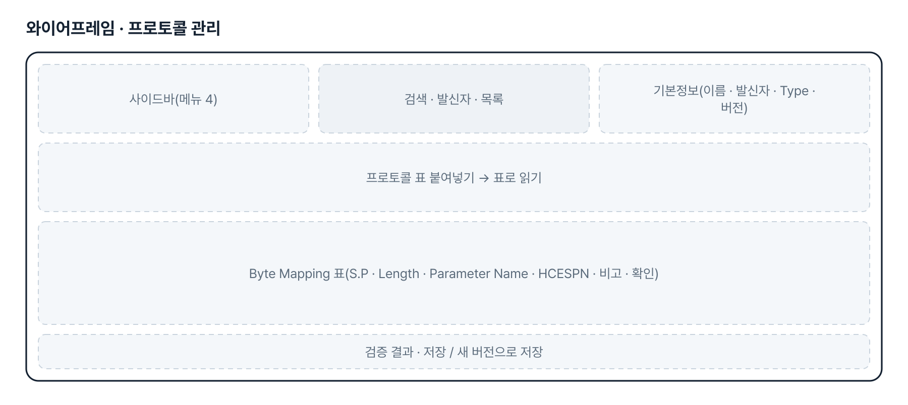
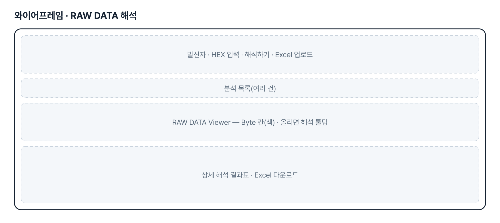
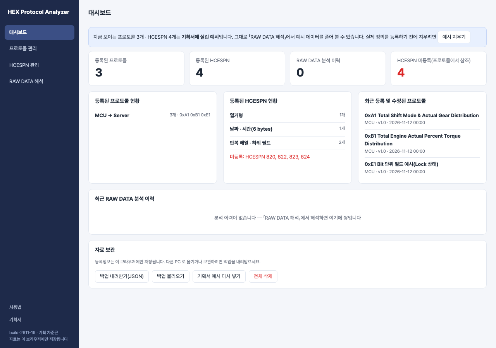

기획서 내려받기
파이프라인 · 아키텍처 · 와이어프레임 · 개발일지가 들어간 워드 문서입니다. 버전마다 따로 남깁니다.
| 버전 | 날짜 | 바뀐 점 | 파일 |
|---|---|---|---|
| v1.0 | 2026-11-13 | 09번 HEX Protocol Analyzer v2.0 을 바탕으로 Bit 단위 필드 추가 — 등록 · 표 붙여넣기 · Bit 범위 검증 · Bit 번호 기준 · 추출 · HCESPN 적용 · 결과표 · Byte Viewer · 엑셀 | 워드 내려받기 |
요구사항과 구현
| 기획서 요구 | 구현 |
|---|---|
| Byte 필드와 Bit 필드를 한 프로토콜에 함께 등록 | 줄마다 Byte 위치(sp)와 시작 Bit(bit) · Bit 길이(bits)를 따로 저장. Bit 가 없는 줄은 기존 Byte 필드 그대로 |
| 표 붙여넣기에서 52.1 · 2 bits · 1 byte · 6 bytes 인식 | spRange · lenUnit — 「52.1」은 Byte 52 의 Bit 1, 길이는 bit/byte 단위를 구분. 어긋난 표기(시작 Bit 없음 · 단위 불일치 · Bit 9)는 고치지 않고 줄마다 알림 |
| 같은 Byte 에 여러 필드 — 겹침은 실제 Bit 범위로 | validateProtocol 이 모든 필드를 Bit 구간으로 바꿔 겹침을 본다(Bit 끼리, Byte 필드와 Bit 필드 사이). 비어 있는 Bit 는 알림 |
| Bit 번호 기준을 프로토콜별로 명시, 불명확하면 추정 금지 | 프로토콜에 「Bit 번호 기준」(Bit 1 = LSB / MSB). Bit 필드가 있는데 고르지 않으면 저장할 수 없고, 해석도 하지 않고 오류로 알림 |
| 추출 뒤 HCESPN 열거값 · 환산식 · 특수조건 적용, 정의 없으면 RAW 만 | extractBits 로 꺼낸 값에 열거 · 수치 · 수식 형식의 HCESPN 을 적용. 미등록이면 추출 RAW 만. Byte 기준 특수조건은 Bit 필드에 적용하지 않고 알림. 날짜 · 배열 형식은 Bit 필드에 쓸 수 없음(오류) |
| 결과표에 Byte 위치 · Bit 범위 · 길이와 단위 · 원본 Byte HEX · 추출 RAW · 해석값 | 상세 해석 결과표에 「Bit 범위」 열, Length 에 단위, RAW HEX = 원본 Byte, Decimal Value = 추출 RAW. 엑셀에도 같은 열 |
| Byte Viewer — 한 Byte 에 여러 필드면 Hover 에 모두 표시, Bit 범위 확인 | 그 Byte 에 걸린 필드를 모두 보여 주고, 필드마다 8칸 Bit 그림에서 해당 범위를 강조. 여러 필드가 든 Byte 는 점선 테두리 |
| Byte 경계를 넘는 Bit 필드의 지원 여부를 명확히 | 지원하지 않음 — 한 Byte 안(시작 Bit + 길이 ≤ 8)만. 넘으면 붙여넣기 · 검증 · 저장 단계에서 오류로 안내 |
| 기존 Byte 단위 프로토콜 · 분석 이력 호환 | Byte 필드의 읽기 · 검증 · 해석 규칙은 09번 그대로(기존 시험 통과). 19번은 저장 공간이 따로라 09번 자료를 건드리지 않음 |
| 검증 예시 — Bit 1 = LSB, 0xB6 → 2 · 1 · 11, 0xA5 → 5 | 테스트에 고정. 예시 프로토콜(E1 B6 A5)로 화면에서도 확인 |
| 메뉴 4개 — 대시보드 · 프로토콜 관리 · HCESPN 관리 · RAW DATA 해석 | 왼쪽 사이드바 4개 메뉴. 대시보드에 프로토콜 · HCESPN 현황, 미등록 HCESPN, 최근 분석 이력, 최근 수정 프로토콜 |
| 통신 주체(발신자 · 수신자) | 발신자 MCU · RMCU · 인증장치 + 직접 추가, 수신자 기본 Server |
| 프로토콜 표 복사 · 붙여넣기 등록 | 탭 구분(엑셀) · 마크다운 · 「S.P: …」 글 꼴을 읽어 S.P · Length · Parameter Name · HCESPN · 비고 추출 → 미리보기 표에서 수정 → 저장. 비고 열 없어도 됨 |
| 자동 검증 | 필수 열 누락 · S.P 겹침 · 빈 구간 · S.P 범위와 Length 불일치(고치지 않고 알림) · Message Type 자동 추출 · HCESPN 등록 여부 · 중복 등록 |
| Message Type 별 프로토콜 · 버전 · 누적 저장 | 발신자 + Message Type + 버전 단위로 저장. 「새 버전으로 저장」 시 이전 버전 보관, 이전 버전으로 재해석 |
| HCESPN 등록 — 원문 붙여넣기 → 자동 구조화 → 확인 → 저장 | 번호 · 이름 · Data Length · Byte 별 항목 · Resolution · Offset · 유효범위 · Endianness · 특수조건을 찾아 칸에 넣고, 확인 뒤 저장 |
그림으로 보기





개발일지
2026-11-13 · v1.0 신설(09 + Bit 필드)
- 요청 원문: 패들릿 09 섹션 「protocol 입력값 예외의 경우도 있어, 수정요청드립니다」(2026-11-13). 마감 뒤 애본님 지시로 09 는 그대로 두고 19번으로 신설
- 엔진 hcespn.js 에 spRange(52.1) · lenUnit(bits) · extractBits · Bit 구간 겹침 검증 · analyze 의 Bit 분기를 추가. Byte 필드 경로는 손대지 않음
- 요청서의 검증 예시(0xB6 · 0xA5)를 테스트에 고정
- 예시 프로토콜의 Message Type 은 0xE1(가상) — HCESPN 820~824 는 뜻을 몰라 등록하지 않음